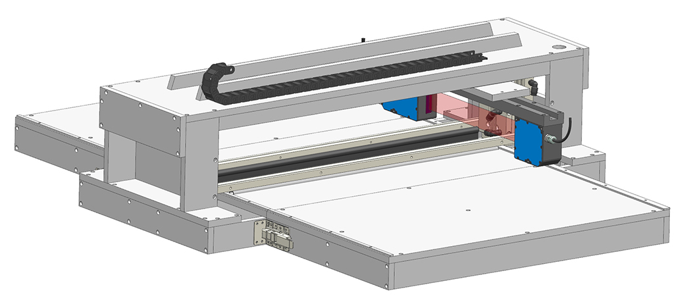
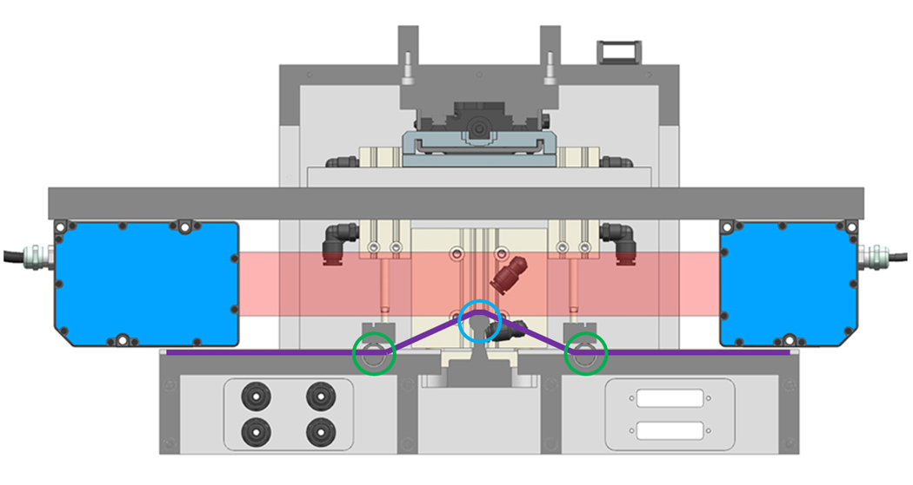

Height Measurement Unit
In the winter of 2018, N12 Technologies began earnest development of a wide-format version of their product, NanoStich. However, after transitioning to a large-format substrate, their exisitng quality control systems could no longer analyze the product without extensive sample preparation. As the on-site engineer, I was asked to produce an offline quality control tool capable of measuring the thickness of the product layer on the substrate to within ±5μm. The substrate is a thin foil, and therefore easily flexes.
After researching possible technologies, I decided that a rastering laser certain would be an affordable and effective solution. I sourced a linear stage and laser micrometer with acceptable specifications, and began designing a method to fixture the sample. Because the substrate is coated entirely on one surface, and due to process contaminants on the opposite face, measuring the sample non-destructively was not an option. My goal then became reducing measurement time and required operator training as much as possible, without sacrificing measurement resolution. The final design (Figure 1) is capable of measuring any sample up to 24 inches in width, and calculates height data to within ±4μm (validated against SEM date). With slower scans, it was able to consistently calculate data to within ±1.5μm, though I opted to reduce read time over the additional increase in resolution.
Figure 1: Rendered isometric view of height measurement unit.
I opted for a 3-point "tent" fixture, which limits operator setup time while also providing a strong reference surface for the laser micrometer to read. The operator is able to slide a sample in with almost no alignment, actuate the clamp bars down, then the reference bar up. The result (cutaway shown in Figure 2) is a peak in the substrate that generates high contrast for the laser. After rastering the laser once, the operator removes the surface coating and repeats the scan. The processing software (written by my colleague) processes the data delta and generates a height profile.
Figure 2: Cutaway showing 3-point "tent" fixture. Clamp bars circled in green, reference bar circled in blue, and resulting substrate path highlighted in purple.
One note about the design: something this size could have easily been made from a welded frame. However, given time constraints and quoted leadtimes from metalworking shops, I elected to make the design out of flat plates connected by fasteners. I was able to design many of the plates to require only one fixture operations, significantly reducing the fabrication leadtime.